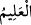
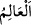
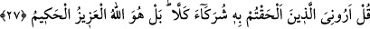

“el-Fettâh” isminin özelliği, işleri kolaylaştırmak, kalbleri nurlandırmak ve fetih
sebeplerini mümkün kılmaktır. Her kim elini göğsüne koyar ve sabah namazının
ardından bu ismi yetmiş bir defa okursa kalbi temizlenir, sırrı nurlanır, işi kolaylaşır.
Bunda ayrıca rızkı ve diğer hususları kolaylaştırma söz konusudur.
“__WORD__ kelimesi “__WORD__in mübâlağasıdır. İlmin kendisiyle kaim olduğu zât demektir.
Allah’ın her şeyi bildiğini bilip tanıyan kimse her şeyde O’nu gözetir. Her konuda
O’nun ilmiyle/bilmesiyle yetinir. Her işte O’na güvenir. Her hususta O’na yönelir.
İbn Atâullah der ki: “İnsanların sana iltifat etmemesi/yönelmemesi ya da zemmederek
yönelmeleri sana elem/acı verdiği zaman sen kendin hakkında Allah’ın ilmine mürâcaat
et (Allah’ın seni nasıl bildiğine bak). O’nun senin hakkındaki ilmi/bilgisi seni hoşnut
etmiyorsa, O’nun seni nasıl bildiğinden emin olmadığın zaman uğradığın musibet;
insanlardan gelen eziyet musîbetten daha şiddetli ve ağırdır.”
“el-Alîm” isminin özelliği ilim ve ma’rifet tahsil etmektir. Bu isme devam eden kimse
Allah’ı O’na yaraşır şekilde hakkıyla bilip tanır. Şemsü’l-maârif ’te der ki: “Her kime
bir iş müphem/anlaşılmaz gelir ya da Allah’ın sırlarından bir sırrı keşfetmek isterse bu
ismi okumaya devam etsin. Bu sayede istediğine kolayca ulaşır ve taleb ettiği hususta
hikmetin ne olduğunu öğrenir. Eğer kişi ilahi sıfat kapısını açmak isterse, ona ilim ve
amelden bir kapı açılır.
27. De ki: O’na (Allah’a) kattığınız ortaklarınızı bana gösterin. Hayır! Bilakis,
yegâne galip ve her şeyi hikmetle idare eden ancak Allah’tır.
“De ki: O’na” Allah Teâlâ’ya “kattığınız ortaklarınızı bana gösterin.” Putlar zaten
Hz. Peygamber (a.s.)’ın gözü önünde dururken onlara ‘putları bana gösterin’ diye
söylemesinin emredilmesi, onların bu büyük hatâlarını ortaya koymak ve görüşlerinin
bâtıl olduğundan onları haberdar etmek içindir. Yâni onları bana gösterin de bir
bakayım hangi sıfatla onları ibâdete müstehak olmakta benzeri olmayan Allah’a ortak
koşuyorsunuz. Bu putlarınız bir şey mi yaratıyorlar ya da rızık mı veriyorlar?
Burada onların aleyhine delil ispat edildikten sonra kendileri iyice susturma vardır.
“Hayır!” Yâni bu ortaklık doğru değildir. Bu ifâde ile putlarla Allah’ı mukayesesinin
geçersizliği ortaya konulduktan sonra onlar ortaklıktan menedilmektedir. Nitekim
İbrahim (a.s.) müşrikleri delil ile susturduktan sonra “Size de Allah’ı bırakıp
tapmakta olduğunuz şeylere de yuh olsun!” (el-Enbiyâ, 21/67) demiştir.
“Bilakis, yegâne galip ve her şeyi hikmetle idare eden” yâni ezici üstünlük ve yüce
hikmet sıfatlarına sâhip “ancak Allah’tır.”
Bu yüce mertebe yanında eşyanın en değersiz ve en zelili olan sizin ortaklarınız